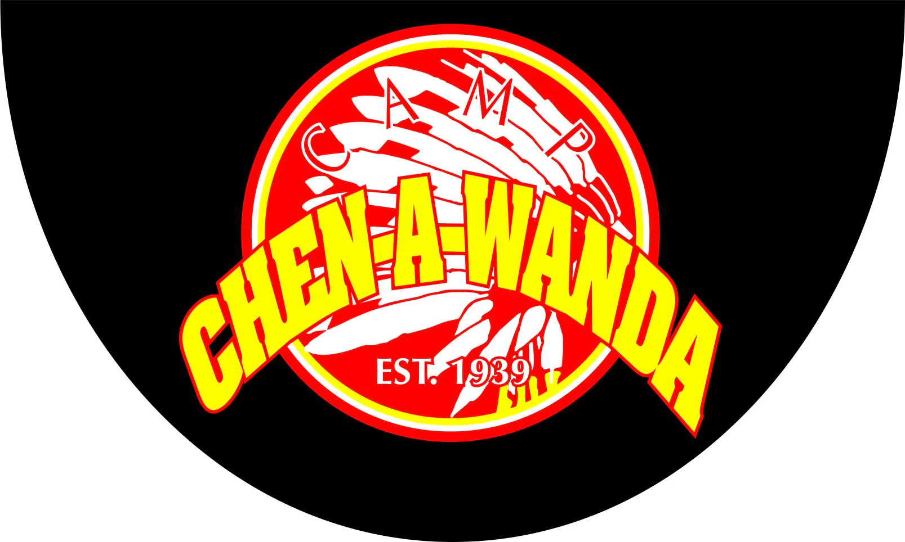

I am a member of Wolverine Support Network, a student-led mental health organization at Michigan. I attend weekly groups where we support one another and provide advice in an open, non-judgmental space.I am also a member of Girls Who Code, a club dedicated to supporting women in the tech industry. I am part of the outreach team, so I help plan events with other groups, such as clubs at elementary schools.

I work at Camp Chen-A-Wanda in the summer, which is a 7 week sleepaway camp in Pennsylvania. This is going to be my eleventh summer at camp, and my third as a counselor. The photos below capture some of my favorite recent memories from camp.On the Fourth of July, everyone dresses up in red, white, and blue, we have a barbeque outside, and we watch fireworks at night. In this photo, I'm with two of my co-counselors before the fireworks show.Olympics is a three day intra-camp athletic and creative competition. This past summer, I was a captain on the gold team. This photo shows me with two of my co-captains after our apache relay.This is another photo from Olympics. I was able to lead campers and other counselors through different games, competitions, and song practices. In the end, my team won!This is the welcome sign to our camp that shows campers, counselors, and families that they are in the right place. This photo shows me with one of my camp friends in front of the sign.This summer my division went on a trip to Philadelphia and Virginia Beach. One stop we made was at Kings Dominion amusement park.At the end of the summer we have a camp-wide banquet where everyone dresses up to have a nice dinner together. Before dinner, everyone spends time taking pictures in front of the lake and in other spots on camp.